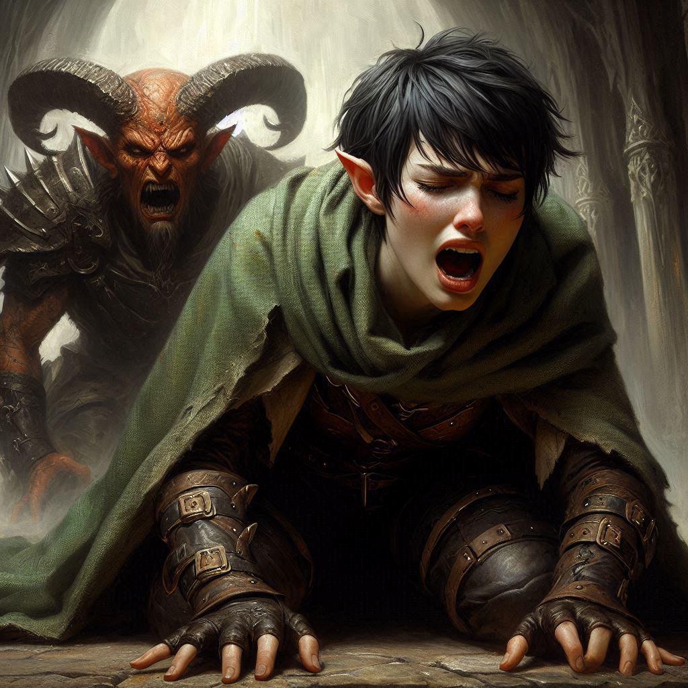
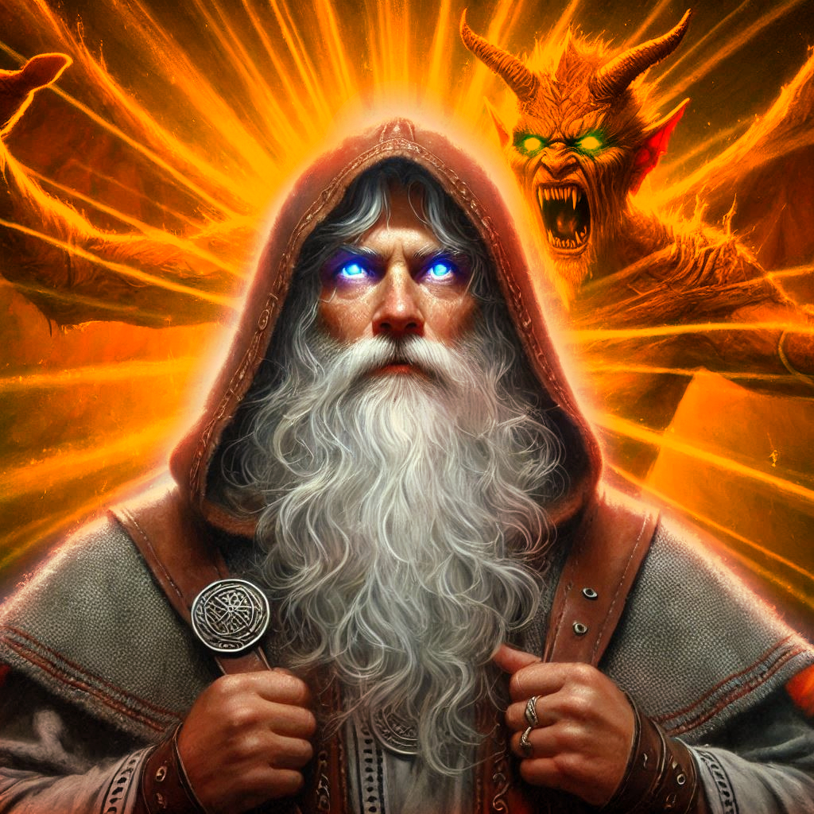

The Power of Love
You stand at the edge of the ancient temple, your heart racing as Yaldaboath emerges from the shadows. The demon’s towering form radiates malevolent power, its eyes burning with the fires of the Realm of Shadows. Jorsh, breathing heavily beside you, stares at the demon, his face twisted in determination. His fingers brush against yours, and for a moment, you feel the connection between you—the bond that never fully broke, even after all these years.
"We can do this, Kira," Jorsh says, his voice low and firm. "Together."
You glance at him, your mind swirling with doubts and memories. This is the same boy who once held your heart, the same man who betrayed you, and yet now—here in the heart of this dark realm—he feels like your only ally. The weight of your decision presses down on you, but your heart beats with certainty.
"I’m with you," you say, gripping the hilt of your sword tighter. "We fight together."
With a single nod, Jorsh steps forward, chanting under his breath. Dark tendrils of magic swirl around him, coiling and twisting in the air, while you draw your sword, the blade gleaming with the faint light that still clings to you from the world above. Yaldaboath roars, a sound that shakes the very foundations of the temple, and the battle begins.
The demon swings its enormous, clawed hand toward you. You roll beneath it, your agility as a ranger keeping you one step ahead. As you rise to your feet, you slash at the demon's thick, shadowy form. The blade cuts deep, but Yaldaboath is too vast, too powerful to be brought down so easily. From behind, Jorsh hurls dark bolts of energy, each one crackling with arcane power, but even his magic seems to barely slow the beast.
"Kira, focus!" Jorsh calls out, his voice sharp with urgency. "Its core—its power lies in the heart! We have to strike there!"
The heart. You’ve faced many foes, but none like this. Still, you know how to listen to your instincts, and in this moment, you trust Jorsh’s words. With a deep breath, you charge at the demon, ducking and weaving as its claws slice through the air around you. You feel the heat of its malevolent aura sear your skin, but you press on. Each step closer to its chest, where a faint, dark pulse glows beneath its surface.
But just as you reach for it, Yaldaboath’s claws catch you, throwing you back against the temple wall. Pain explodes in your body, and your vision blurs. You hear Jorsh scream your name, but it’s distant—muffled by the darkness pressing in on all sides.
Is this how it ends?
As your strength wanes, a brilliant light suddenly fills the room. You blink, struggling to understand what’s happening. Onyx, chained to the altar, begins to glow with a radiant, golden light that pierces through the shadows. You stare in disbelief as the chains holding him crumble into dust. His weathered face becomes serene, and his body rises from the altar as if lifted by unseen hands.
"Onyx?" you whisper, your voice hoarse.
"No," Onyx says, his voice carrying the weight of eons. "I am Adonais, Archon of Light. And my time has come."
The light from him intensifies, filling the entire temple. Yaldaboath howls in fury, recoiling from the brilliant radiance. The demon swipes at Adonais, but each strike is met with blinding light that burns the creature’s shadowy form. Jorsh rushes to your side, helping you to your feet, but neither of you can look away from what’s happening.
Adonais—Onyx—turns toward you both, his face filled with peace. "This is my destiny, Kira. My life was meant for this moment. Yaldaboath's reign ends here, with my sacrifice."
"No!" Jorsh yells. "We can fight it! We can destroy it!"
But Adonais only smiles gently. "Some battles are won not through strength, but through surrender."
With that, his body erupts into a blinding flash of light. Yaldaboath lets out one final, ear-shattering scream as the light envelops him, burning away the darkness until nothing remains but silence and the shimmering afterglow of Adonais' final act.
The temple, once filled with shadows, now stands bathed in golden light. The portal to the Realm of Shadows quivers and begins to close, the power that once held it open dissolving into the air. As the light fades, you realize that Adonais—Onyx—is gone.
A soft breeze stirs in the air, and a spectral figure of Adonais appears before you. He is no longer chained, no longer bound by mortal concerns.
"You are free," he says softly, his gaze warm. "My time has passed, but yours is just beginning. The world is in your hands now."
With a wave of his hand, Adonais opens a portal leading back to Hemlock Caverns. The glow from the exit contrasts with the dark, foreboding aura of the Realm of Shadows.
You exchange a glance with Jorsh, and in that moment, you understand everything has changed. The battle is over, but the future remains uncertain. Together, you step toward the portal, leaving behind the Realm of Shadows and the memories of the battle.
You take a final look at Adonais, and he gives you a gentle nod. "Be strong, Kira," he says. "Your path will not be easy, but you will never be alone."
With those final words, you step through the portal, leaving the Realm of Shadows behind and entering the unknown future.